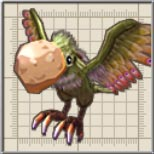
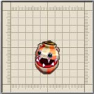
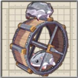
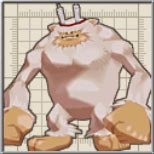

爆弾を投げられるよりはましですが。
前作は凍結攻撃や爆弾も使ってきたのですが、ちょっと弱体化してますね。
しかもちょうちんもどきより体力が高いとは・・・。
雪山に畑なんてないのですが・・・。
とはいえ、二人のは速度も精度も落ちるような気がしてなりません。
人類の科学よりもある意味進んでいるかもしれませんね。倒すと搭乗しているコボレンジャーたちが出てきます。
ホシフリンデで観測できます。

目次 > ゲームについて > 日本Falcom 攻略 > ZWEI II > 敵キャラ一覧 > 星ヶ峰
らんの眼
ZWEI II (ツヴァイ 2、ZWEI II Plus)
| 概要 | 情報 | 攻略チャート |
| フード交換 | ペットについて | ボス戦 |
| 敵キャラ一覧 | ハンターランク | G-コロッセオ |
| アイテム一覧 | ガジェット一覧 | トレジャー一覧 |
| ダンジョン一覧 | クリアデータ特典 | Plusの追加要素 |
| ZWEI II攻略へ | 目次へ戻る |
| [ セクンドゥム廃坑 ] [ オルディウム神殿 ] [ 金闇の森 ] [ アウロン大鉄塔 ] [ ムーンブリア城 ] [ 星ヶ峰 ] [ ルナ＝ムンドゥス ] [ メルセデク ] |
| 名前 | 画像 | レベル | HP | フード | メモ |
| やまつつき |  | 16 | 6945 | マンゴー | 遭難者の屍肉を貪る魔鳥。硬いくちばしは死体の骨を砕くのに使うという。 |
| りゅうだんいわ | 17 | 8014 | チャーハン | 空中に砲弾をばら撒く岩。元は狩猟用だったものが魔族によって改造された。 | |
| ゆきおこじょ | |
17 | 8014 | チャーハン | 近隣民には『妖精』と呼ばれることもあるおこじょ。しろおこじょより白い。 |
| ゆきやまがえる | 17 | 8014 | チャーハン | 寒い季節に活躍する大蛙。雪が溶けて凍った背中は侮れない強度を持つ。 | |
| すざく | 18 | 9171 | しいたけ | 空中から鋭利な羽根弾をばら撒く怪鳥。羽ばたきで竜巻を起こす事も。 | |
| くまこぷたー | |
18 | 9171 | しいたけ | 空が飛べるように尻尾が進化した熊。手の届かぬ空中から爆弾を投下する。 |
| こどもいえてぃ | 13 | 4255 | アジの開き | 子供のいえてぃ。バナナを投げつける。食べ物を粗末にしてはいけません。 爆弾を投げられるよりはましですが。 |
|
| いえてぃ | 20 | 23521 | 栗ようかん | 別名「ですさるーん。筋力に任せて人を襲う。子供思いだがが少々過保護。 前作は凍結攻撃や爆弾も使ってきたのですが、ちょっと弱体化してますね。 |
|
| ちょうちんもどき | 19 | 10419 | チョコレート | アイテムが出るからと提灯に擬態したミミック。欲ある所に魔物あり。 | |
| ちびちょうちん |  | 18 | 13757 | しいたけ | 子供サイズの提灯に擬態した魔物。攻撃がとても当てにくい。 しかもちょうちんもどきより体力が高いとは・・・。 |
| いちもくれん | 18 | 9171 | しいたけ | 巨大包丁を持った危険なカカシ。畑を守りたい過度な想いで妖怪化。 雪山に畑なんてないのですが・・・。 |
|
| れんごくぐるま |  | 15 | 5964 | 焼き鳥 | 二匹で操縦することで速度と精度が上がった車輪。コーナリングも完璧。 とはいえ、二人のは速度も精度も落ちるような気がしてなりません。 |
| ぶりきぼっと | 20 | 29401 | 栗ようかん | こぼるとの超強力な哲人。現時点における『こぼるとてくのろじー』の集大成。 人類の科学よりもある意味進んでいるかもしれませんね。倒すと搭乗しているコボレンジャーたちが出てきます。 |
|
| ですれみんぐ | 18 | 16050 | しいたけ | 魔の大鼠が操る大車輪。 | |
| にゅーとりの | 21 | 39587 | カレーライス | 魔法が全く通じない物質で特殊な体を持つ謎の物体。周囲に魔法攻撃を行う。 ホシフリンデで観測できます。 |
|
| おんせんすざく | |
18 | 27514 | しいたけ | 里の温泉の暖かさに触れて大きく育ったすざく。羽ばたきの風は台風並み。 |
| びっぐいえてぃ |  | 18 | 27514 | しいたけ | 山の奥深くで眠っていた山のヌシ。大陸の以上に感づいて目覚めた。 |
| ガルガリオン | 19 | 57308 | なし | <<ルナ＝ムンドゥス>>への鍵を守る大岩の神竜。拳に雷を生む魔石を持つ。 | |
| へるめいど | 19 | 14183 | 首に力が入っておらず、変な姿勢のまま手にした包丁で攻撃してくる。 | ||
| はにわおこじょ | 20 | 23521 | 頭にはにわをのせた黒おこじょ。 | ||
| はにわにわとり | 20 | 23521 | チョコレート | 背中にはにわをのせたにわとり。足下に草を生やし、常に体力を回復している。 | |
| 名前 | 画像 | レベル | HP | フード | メモ |
| [ セクンドゥム廃坑 ] [ オルディウム神殿 ] [ 金闇の森 ] [ アウロン大鉄塔 ] [ ムーンブリア城 ] [ 星ヶ峰 ] [ ルナ＝ムンドゥス ] [ メルセデク ] |
| 概要 | 情報 | 攻略チャート |
| フード交換 | ペットについて | ボス戦 |
| 敵キャラ一覧 | ハンターランク | G-コロッセオ |
| アイテム一覧 | ガジェット一覧 | トレジャー一覧 |
| ダンジョン一覧 | クリアデータ特典 | Plusの追加要素 |
| ページの上部へ | ZWEI II 攻略へ | 目次へ戻る |